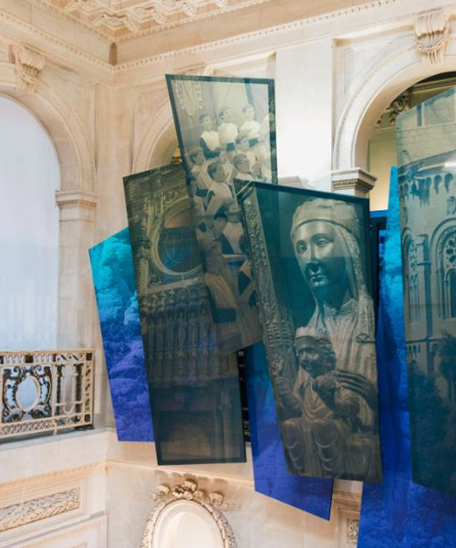

Activitats culturals
No només de pa viu l'home, diu la dita popular. També cal nodrir la part intangible que ens defineix. I aquells que planegen com invertir productivament el temps d’oci nadalenc no obliden les propostes culturals que alimenten l’esperit. Visites guiades, exploracions, redescobriments artístics, arquitectures a l’abast...


L’església romànica de Sant Vicenç de Rus, consagrada el 1106, ofereix visites guiades per descobrir la seva arquitectura i les reproduccions de les pintures originals, conservades al Museu de Solsona. Una experiència única en un entorn natural ideal per gaudir en grup.

Aquesta exposició revela la trajectòria del caixmir, un disseny atemporal que ha marcat la moda durant més de 400 anys. S’hi exhibeixen peces dels principals museus tèxtils de Catalunya, obres d’estudiants i creacions de l’artista tèxtil Sylvia Calvo.

Cada tercer diumenge de mes, una visita guiada permet explorar la història i l’arquitectura d’aquesta antiga colònia tèxtil d’origen escocès, declarada Bé Cultural d’Interès Nacional. Un recorregut pel teatre casino, les calderes i altres espais emblemàtics.

Converteix-te en pelegrí medieval i descobreix els monuments romànics del Lluçanès amb un mapa interactiu. Fes-te selfies davant de cada monument, respon preguntes i acumula monedes virtuals per aconseguir un obsequi especial.

El tram 4 del Grand Tour et convida a gaudir de la natura passant per Gósol, poble que va inspirar Picasso, i seguir els camins dels càtars. La imponent silueta del Pedraforca t’acompanyarà en aquesta experiència única pel Berguedà.
El Cava Centre ofereix una experiència audiovisual immersiva per descobrir els orígens, la història i els secrets del cava. Explora curiositats com l'origen de les bombolles o l'ús del tap de suro en un viatge sensorial únic.

A la Colònia Güell, Gaudí va experimentar per primera vegada amb les innovacions arquitectòniques que després aplicaria a la Sagrada Família. Una joia inacabada que ell mateix va descriure com una “maqueta monumental” del seu gran projecte.
Els Jardins Artigas són una obra desconeguda de Gaudí, creada com a agraïment a la família Artigas. Situats a la Vall de Lillet, fusionen natura i arquitectura, i ofereixen una vista única de la creativitat del mestre modernista.

L'exposició "Montserrat, 1.000 anys", al Palau Robert, recull els sentiments i la història de generacions que han viscut la muntanya com a símbol de força i espiritualitat. Des de la fundació del monestir fa mil anys, Montserrat ha estat un lloc de referència per als catalans.

Per commemorar el centenari del naixement d'Antoni Tàpies, el Museu d'Art Medieval (MEV) presenta la portada que el pintor va crear per a la revista Cavall Fort el 1967, acompanyada d'un text seu sobre l'art.

Visita al conjunt monumental de Sant Miquel del Fai, on la força de l’aigua ha creat un paisatge únic. Descobreix una exposició, audiovisuals i un itinerari que et portaran pels punts d’interès d’aquest entorn privilegiat.
Exposició temporal de ceràmica contemporània amb les obres d'Anne Laure Cano i Jim Gladwin. Inspirats en la tradició ceramista d’Esplugues i la història de la fàbrica Pujol i Bausis, els artistes presenten obres que sorprenen per la seva intensitat, textures i originalitat.

Carme Porta presenta la seva exposició de pintura "Alternança", on explora el canvi i el moviment a través de la natura i la tradició. Amb pinzellades decidides, crea espais plens d'energia que, tot i la seva aparença caòtica, busquen establir un ordre que convida a una nova manera de percebre la realitat.
Visita les Mines de Gavà, les més antigues d'Europa, on podràs descobrir com vivien els homes i dones del neolític fa 6.000 anys. Aquest jaciment únic revela les tècniques d'extracció de variscita, un mineral ornamental, i ofereix una mirada excepcional sobre l'època neolítica.

Explora l'arquitectura de Lluís Muncunill a Terrassa: l'Ajuntament, la Torre del Palau, la masia Freixa i l'antiga fàbrica Vapor Aymerich. Una ruta exclusiva que culmina amb un petit tast.